DIY Web Hosting
How to host HTML on your own Windows machine?
Some time ago I bought a cheap Acer laptop for hosting a Plex Server. I keep all sorts of good stuff on an external SSD and access it via VNC Viewer to put even more sweet stuff on that hard-drive. Simply put, it's hugely popular with my household AND friends (who can access it from their own home.)
For the networking assignment I got inspired by this media server of mine. How about hosting a website on my own web server? It ticks all the boxes when it come to learning about HTTPS, DNS, TCP/IP, Web server basic functionality, etc.
So how about digging into this?
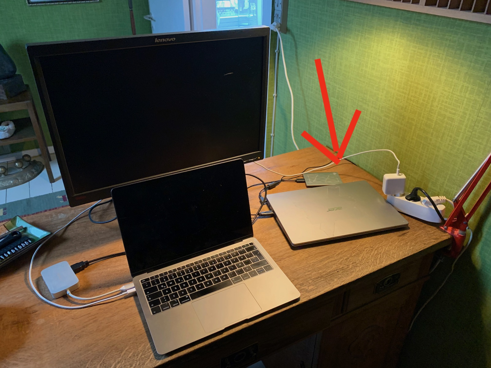
Here's my lame ass Windows 10 machine, waiting to be further connected to the outside world ...
For this walkthrough I'll be putting up a simple, plain HTML site. We'll be setting up a WAMP-server. This is an application that bundles together a lot of hosting-essential-stuff, like Apache, SQL, PHP. We won't be using all those features, but maybe another episode?
First step ... Accessing my computer via remote desktop.

This computer is pretty much vanilla Windows. As you can see, I haven't even installed a browser. Edge works just fine for this and I try not to take up any unnecessary, valuable real estate on my small, local hard-drive.
Second, downloading WAMP. This is the 64-bit version. WAMP's official website does some annoying sign-up bullshit when hitting "Download" so I linked to a file hosted on Sourceforge.

This is sure taking a while to download ... Looks like Sourceforge is doing some serious throttling!
Download finally completed. Let's open up this sucker!

Now, god damn it!
The VNC viewer is giving me a black screen. Probably because I'm running MacOs beta on my primary machine. I guess I'll have to go home and finish this install physically.
Later skater ...
... and we're back, ladies and gentlemen! I tried updating the program, but it was also a no-go. So we're here on the Windows computer itself.
The first thing they do recommend is checking if your computer has all necessary Visual C++ Packages. WAMP has a handy tool for that here: https://wampserver.aviatechno.net/files/tools/check_vcredist.exe.
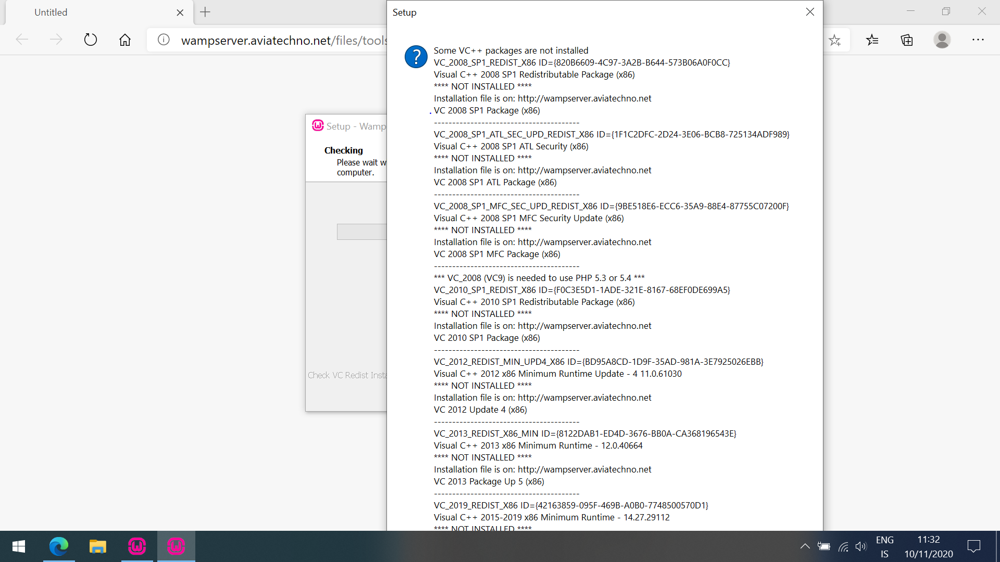Wow, that's a lot of stuff! Fortunately, all these packages can be downloaded in bundle on WAMPSERVER's website. Like this: https://wampserver.aviatechno.net/files/vcpackages/all_vc_redist_x86_x64.zip. After installing them I restart the computer and fire up the server installer.
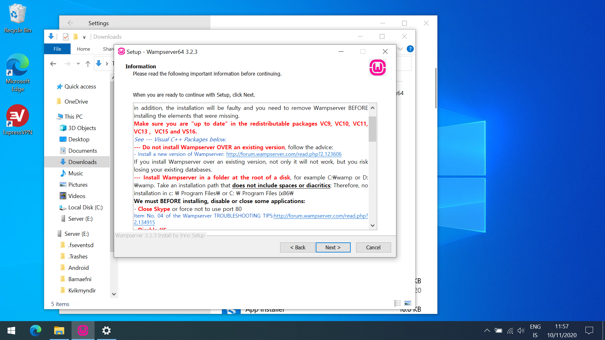Here you'll be told that you need to make sure all those Microsoft packages are installed, the server is installed in root of C:/ drive and Microsoft's IIS Server should be disabled (if you have that running on your computer that is.) I think we should be good to go, so I hit "Next".
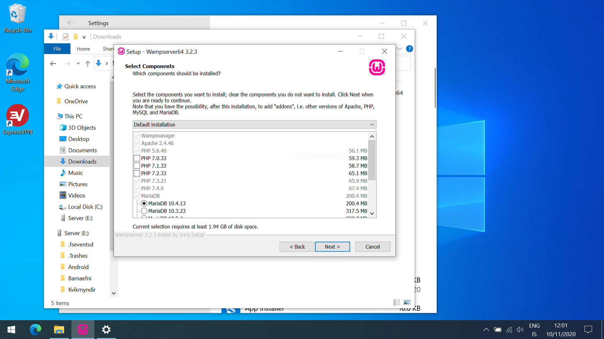Here we are offered to pick and choose some features, such as which version of PHP, MySQL and MariaDB we want. I'll just stick to the default installation.
After hitting "Install" the process took about 5 minutes. I then opened up the application, and was greeted with this little guy here ...
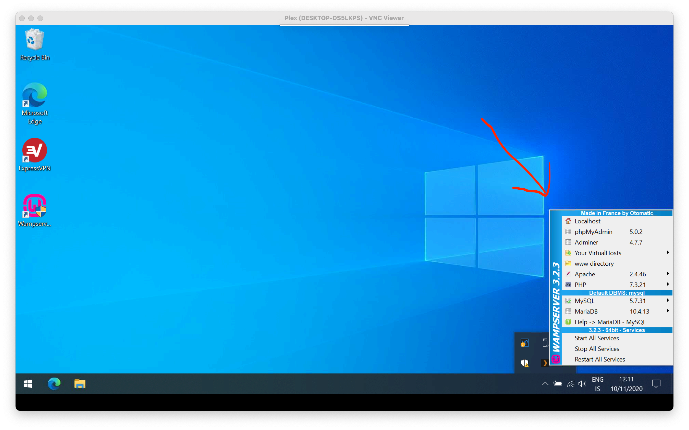... might notice I got the VNC to work again. There was this thing in Windows where doing stuff with admin privileges would take over the screen as pop-up with overlay that was interfering with the VNC server. Just FYI.
And will you look at that! When I check out my localhost, I'm presented with my server's greeting page.
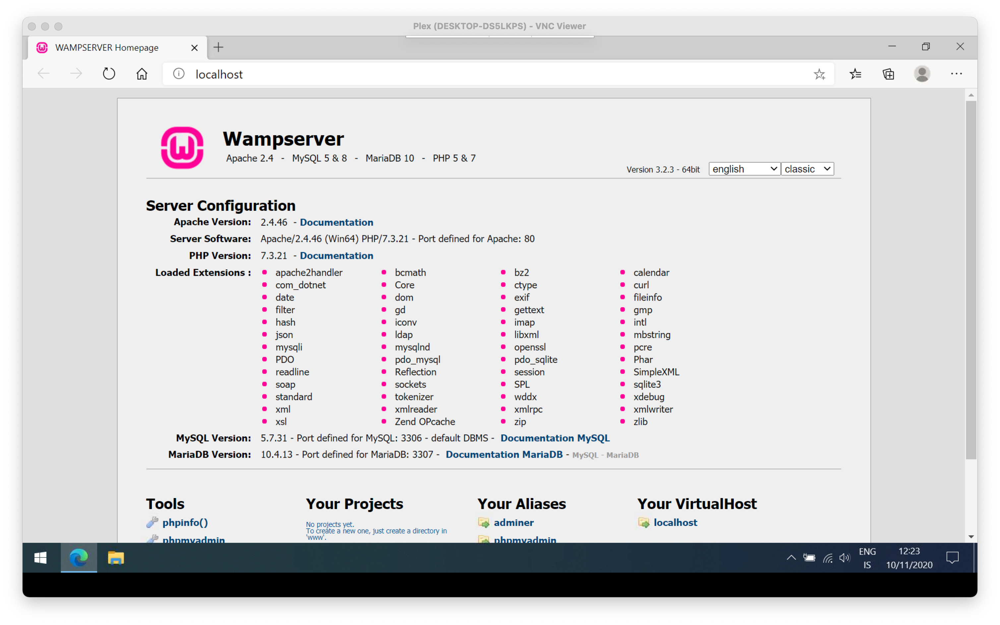The next step would be creating a new host for my new project. I could just easily replace the contents of my www-directory, but that would mean I'd always have to do that when I start a new project - and also, the default localhost welcome screen would go missing.
Here I've updated the www-directory. I should mention, this folder is standard for all web hosting; it's the content the server is suppose to deliver when a user asks for a DNS request to our server. I copied a recent project of mine from GitHub and placed it in a sub-folder called "inLove".
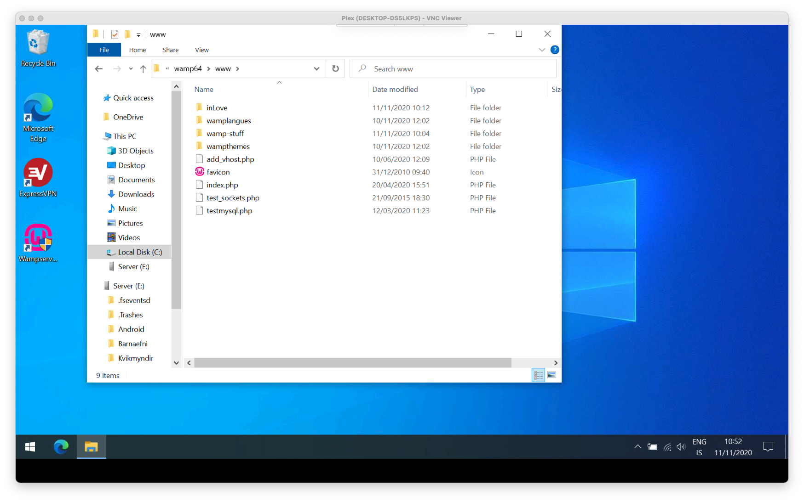To create a new host, via the WAMP tray icon, I select Your VirtualHosts > VirtualHosts Management. I'm presented with a browser tab to name my host and specify it's location on my hard-drive.
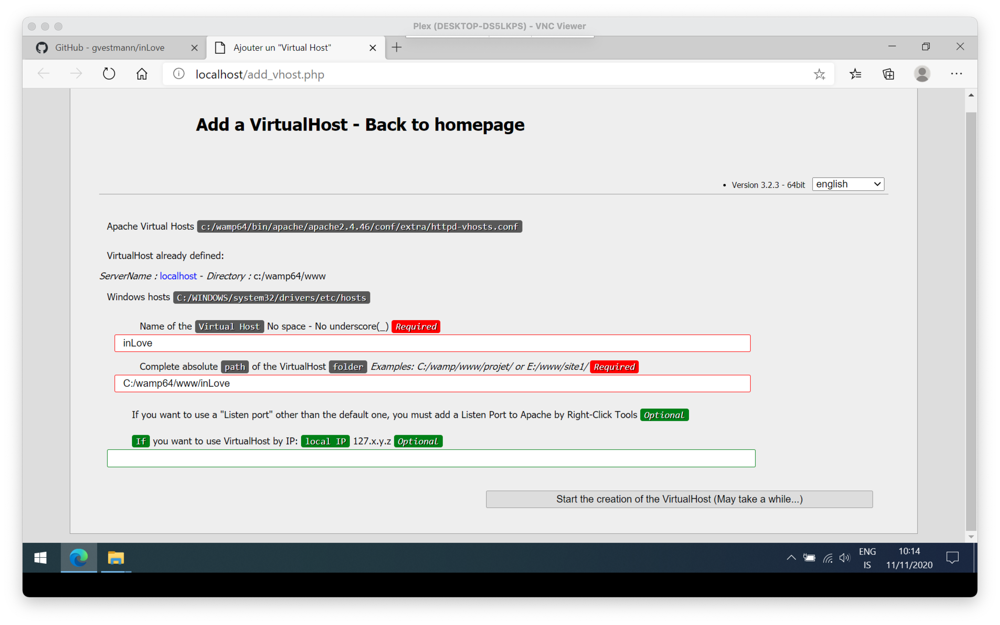Now, via WAMP tray-icon I can again go to Your VirtualHosts and select my new host, "inLove".
And ta-da! My site is up and running and as you can see in the address bar, it's got another internal address "inLove/".
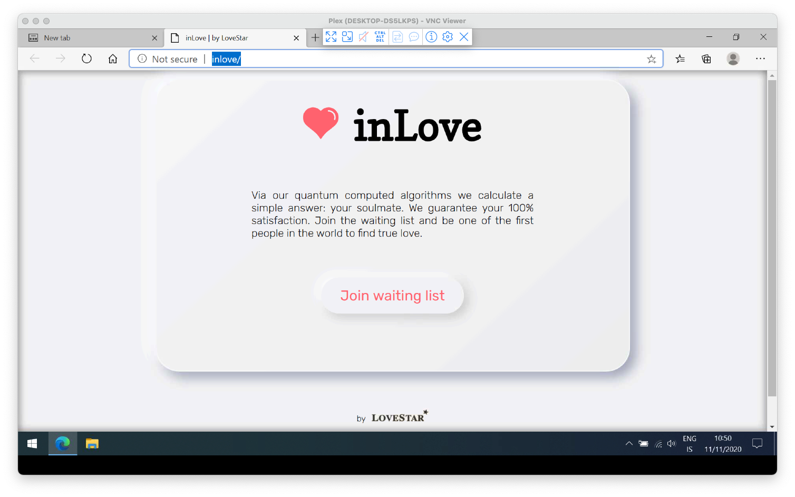Now, if we would like to make this site accessible to the outside world, we will need to edit Apache's httpd-vhosts.conf-file. That's also found in WAMP icon, under Apache submenu. On the photo below, you'll see that my localhost setting is a bit different from my inLove settings.
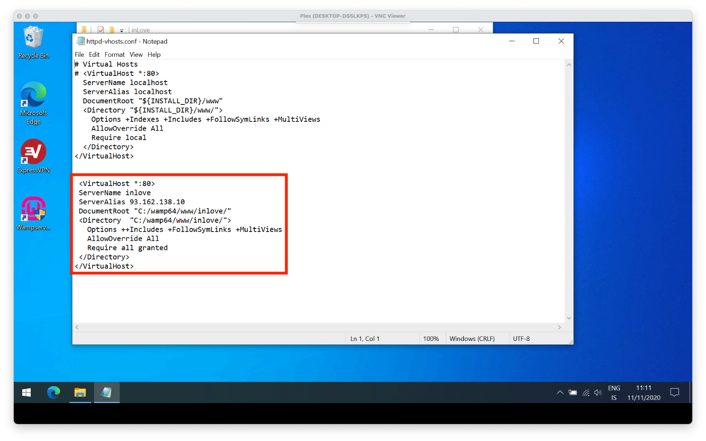- The VirtualHosts port at the top has been commented in
- The server name refers to inLove, not localhost
- The server alias is now my public IP address (this can be found via cmd or a simply Googling)
- I removed the +Indexes option
- And finally, require now allows all access granted (meaning external as well)
Next step. Allowing external connections via port 80 to access our server. For that we head to "Windows Defender Firewall with Advanced Security". In the left sidebar your can select inbound and outbound rules. We're going for "inbound". From there we add a "New rule" from the right sidebar.
It's a process with a few "Next" clicks, so I'm not gonna screenshot each one. What we want to do is this: The "Rule Type" is "Port". We used "TCP-protocol" and the specific port 80. We allow connection. We just check all the profiles for this one (home traffic, public traffic, etc.). And lastly, we name our rule something cute.
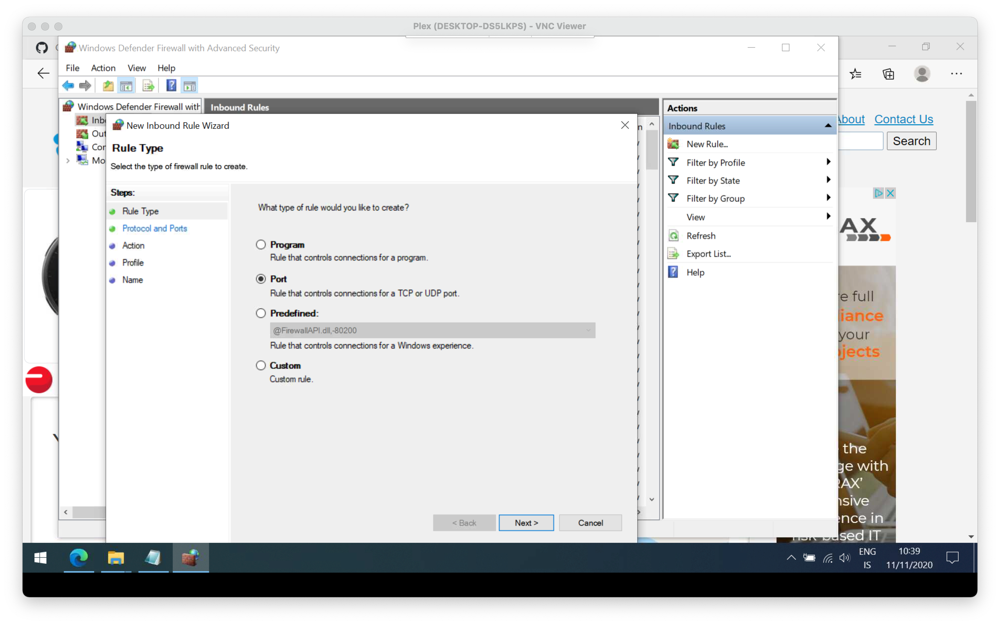Finally, final step! We have to head to our router's admin page. That's usually accessible via IP-address 192.168.1.1. Now, since I'm staying at my mother's I actually don't want to mess with her router settings, but the process is fairly simple. You find your Port forwarding settings (where that's found, depends on your router's model.) You forward port 80 to your web server IP address (that is, the computers external IP we found earlier with CMD or Googling). And we use protocol TCP and hit save. Your new web server is now accessible via your browser of choice by typing in http://[Your-External-IP] from any internet connect device!
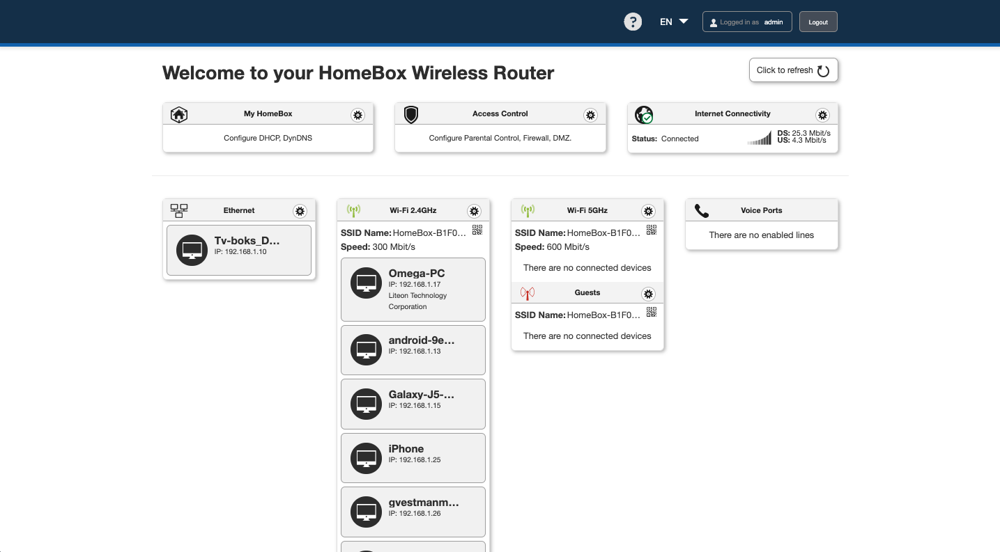And what could be some cool next steps, you might ask?
- If you don't have a disposable computer lying around, you could purchase a cheap PI (Raspberry or Orange) to test this out yourself. They even have some Linux-distros pre-installed on SD-cards which make this process much less of a hassle.
- When working with stuff like Wordpress locally, an application like WAMP is essential. Since it comes bundled with PHP and SQL, you'd make your own SQL-database and put the WP installation files in the www-directory. You can also of course put that Wordpress instance online for the world to see.
- You could buy a fancy domain, say from GoDaddy or ISNIC. From their setting page you'd simply direct the domain/URL via DNS lookup to your computer's external IP.
- And you could setup git and incorporate it's workflow into your live page!
But that's it for now, folks! Hope you enjoyed this a bit. Until later ...